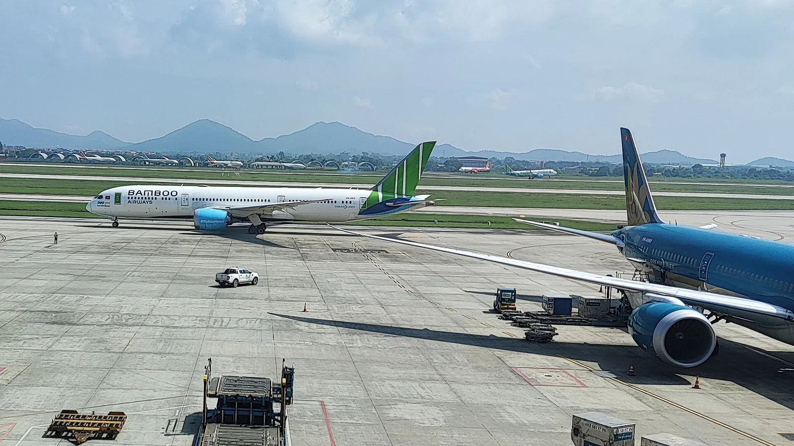
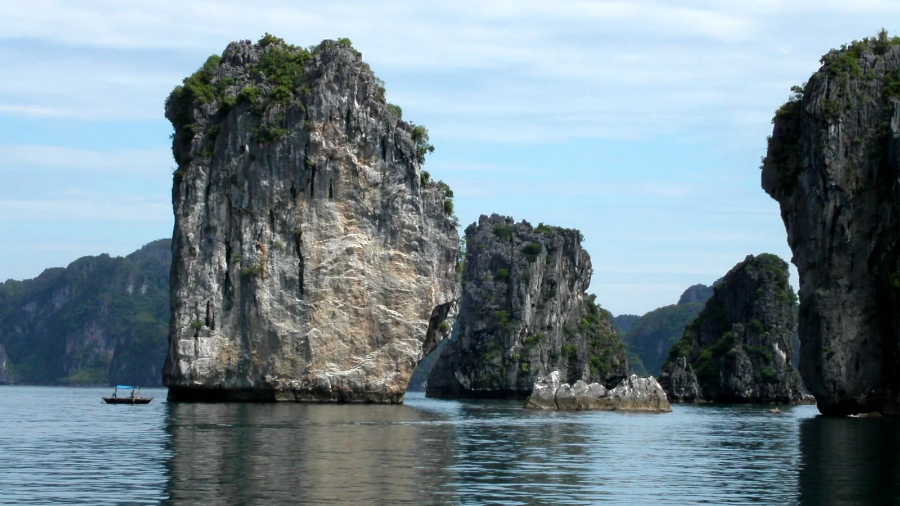
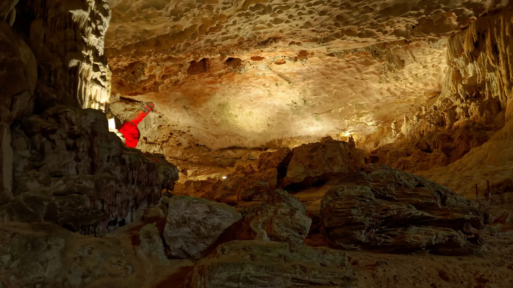
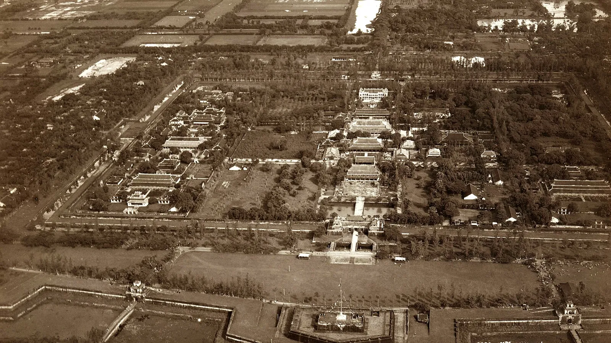
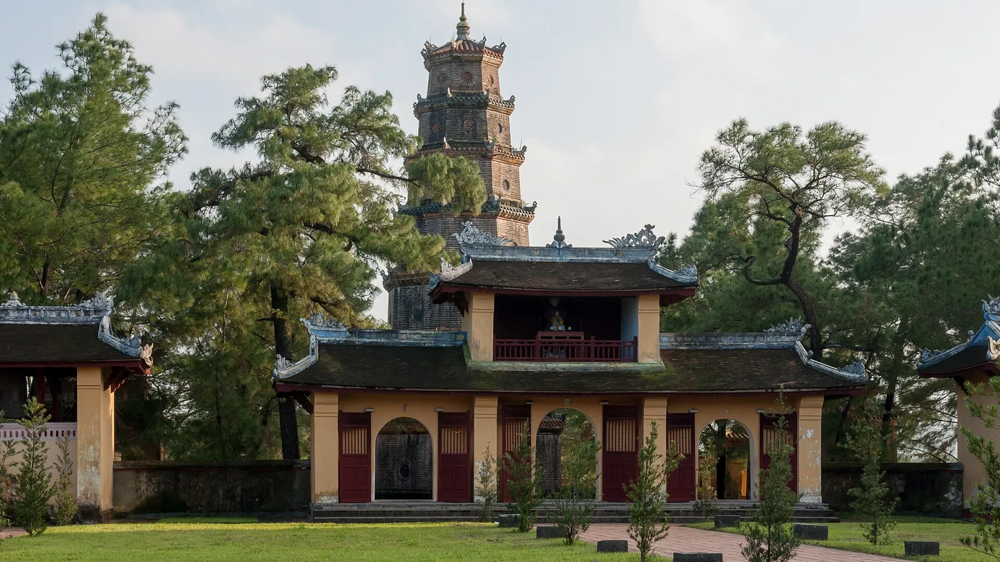
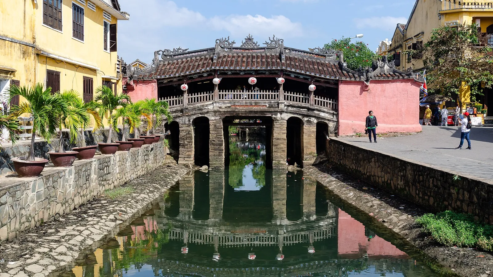
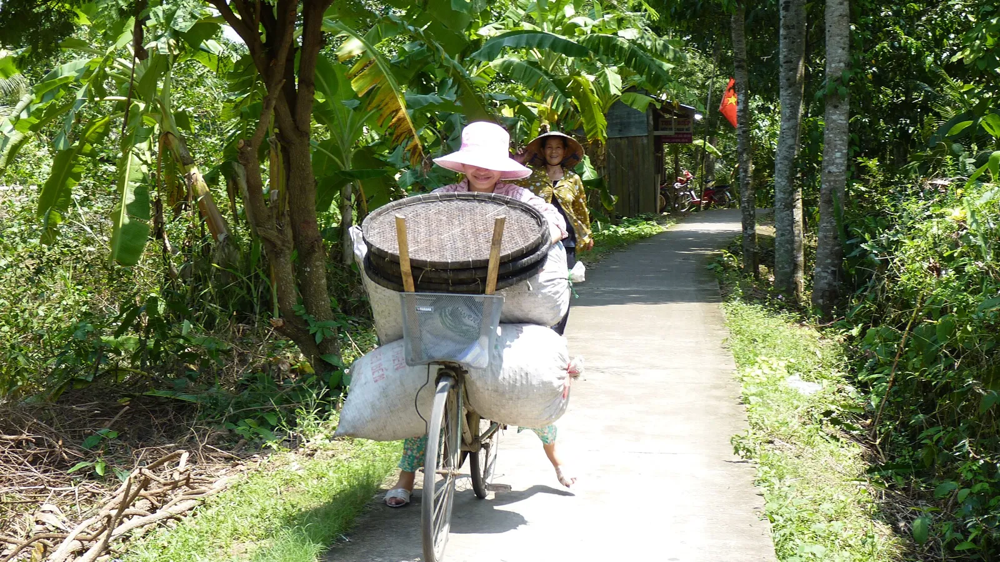
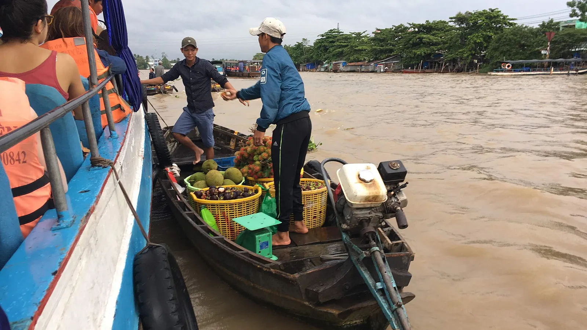
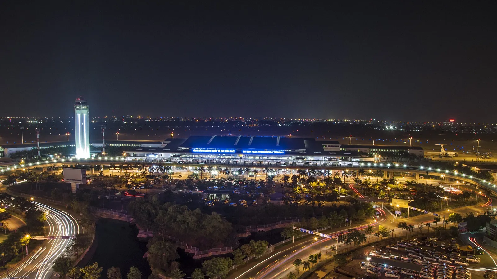
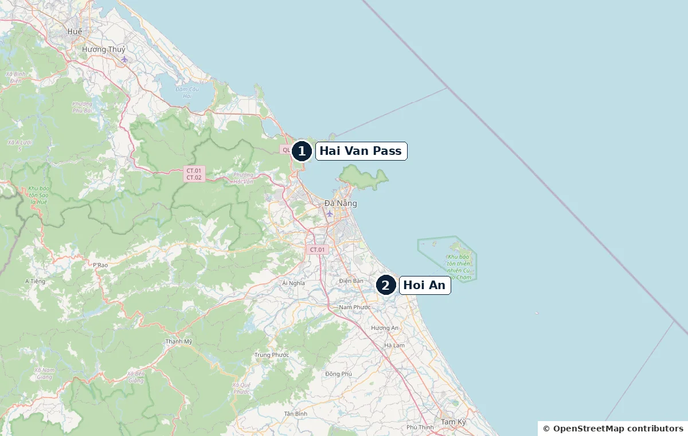

Vietnam from top to bottom with private guides. Hanoi's old quarter and water puppets, a night on a cruise boat among Ha Long Bay's limestone islands, the imperial citadel and royal tombs of Hue, the Hai Van Pass to Hoi An's lantern-lit old town and beaches, the energy of Ho Chi Minh City, and a night aboard a wooden rice-barge cruise on the Mekong Delta with its floating markets. The Mekong cruise sails on set days, so we fit your dates to its schedule.
See it for yourself
Photos from the journey









Where you go
The journey on one map

HanoiHa Long BayHanoiHueHai Van PassDa NangHoi AnHo Chi Minh CityCai BeCan ThoHo Chi Minh City
Day by day, in short
Daily travel brief
Distances are by road for the whole day. The full plan with timings comes with your detailed itinerary.
-
1
Arrive in Hanoi and a water puppet show
Thang Long Water Puppet Theatre
- Walk around Hoan Kiem Lake on weekend evenings when the streets close to traffic.
-
2
Hanoi city tour
One Pillar Pagoda Temple of Literature Tran Quoc Pagoda
- The mausoleum opens mornings only and closes on Mondays and Fridays, and for about two months each autumn.
- Try Hanoi's egg coffee, or a coconut coffee if you avoid egg.
-
3
Overnight cruise in Ha Long Bay
- Kayaking, a cooking demonstration or a swim: wear the life jacket when kayaking.
- Bring a light jacket for the deck at night from November to March.
-
4
Surprise Cave and back to Hanoi
- Sung Sot: shoes with grip; the cave steps are damp.
- Free evening in the Old Quarter.
-
5
-
6
Perfume River, Hai Van Pass and Hoi An
-
7
Hoi An old town and the beach
- Old town walk: the old town is car-free; a ticket covers five sights.
- Tailors can make clothes in 24 to 48 hours: order on day one.
-
8
Hoi An at leisure
- Use high-factor sunscreen; the central coast sun is strong.
-
9
Fly to Ho Chi Minh City and a city tour
Saigon Central Post Office Thien Hau Temple
- The cathedral exterior is under long restoration; views may be limited.
- Keep phones away from the kerb: bag snatching from motorbikes happens.
-
10
-
11
Floating market and back to Saigon
- Markets are busiest at dawn.
-
12
Fly home from Ho Chi Minh City
- Transfer to the airport: leave plenty of time: traffic is heavy.
- Spend your dong before leaving; it is hard to change abroad.
Local know-how
Travel hacks from our desk
Hotel deposit
Use a credit card for the deposit or pre-authorisation at check-in, never a forex or debit card. Forex cards cannot hold funds, many hotels refuse them, and a credit-card hold is released faster.
Dong and cash
Prices are in Vietnamese dong. Hotels and big shops take cards; markets, street food and small boats need cash. Count zeros carefully: 100,000 and 10,000 notes look similar.
Traffic
Motorbikes are everywhere. Cross the road at a slow, steady pace so riders can steer around you; do not stop or run.
Temples and the mausoleum
Cover shoulders and knees in pagodas and at Ho Chi Minh's Mausoleum, where silence is required and no photos are allowed inside.
When to go
Best time to visit for this journey
February to April.
February to April is good everywhere. The central coast (Hue, Hoi An) has heavy rain and floods from about September to November; the north is cool from December to February.
The package
What's included
Included
- 11 nights with breakfast, including two overnight cruises with full board on board
- Private car and English-speaking guides throughout
- Flights Hanoi to Hue and Da Nang to Ho Chi Minh City
- Water puppet show and dinner
- Dinner in Hue
- All sightseeing and entry fees as listed
- 24/7 support from Blue Diamond Voyage
Not included
- International flights
- Vietnam e-Visa
- Other meals
- Drinks
- Tips
- Travel insurance
The detailed itinerary
Some journeys are planned. Ours are crafted.
The full 12-day plan is ready: hour-by-hour timings, drive times, temple dress codes, food for your diet and a route map for every day. Tell us your dates and your city, and we'll send it to you on WhatsApp, shaped around you.
- Hour-by-hour timings
- A route map for every day
- Hotel and room details
- Visa and entry steps
- Vegetarian and Jain dining
24/7 travel desk+91 97148 59797+91 98242 21400
Photo and map credits
- Noi Bai International Airport: Shyamal, CC BY-SA 4.0, via Wikimedia Commons
- Ho Chi Minh Mausoleum: CEphoto, Uwe Aranas, CC BY-SA 3.0, via Wikimedia Commons
- Ha Long Bay: Thomas Hirsch / User:Ravn, CC BY-SA 3.0, via Wikimedia Commons
- Sung Sot Cave: Jakub Hałun, CC BY 4.0, via Wikimedia Commons
- Hue Imperial City: Unknown authorUnknown author, Public domain, via Wikimedia Commons
- Thien Mu Pagoda: CEphoto, Uwe Aranas, CC BY-SA 3.0, via Wikimedia Commons
- Japanese Covered Bridge: Steffen Schmitz (more photos), CC BY-SA 4.0, via Wikimedia Commons
- Independence Palace: Diego Delso, CC BY-SA 3.0, via Wikimedia Commons
- Cai Be: Adriaan Castermans, CC BY-SA 3.0, via Wikimedia Commons
- Cai Rang Floating Market: Christophe95, CC BY-SA 4.0, via Wikimedia Commons
- Tan Son Nhat International Airport: Bem photography:, CC BY 2.0, via Wikimedia Commons
- Maps: © OpenStreetMap contributors; road routes by OSRM.